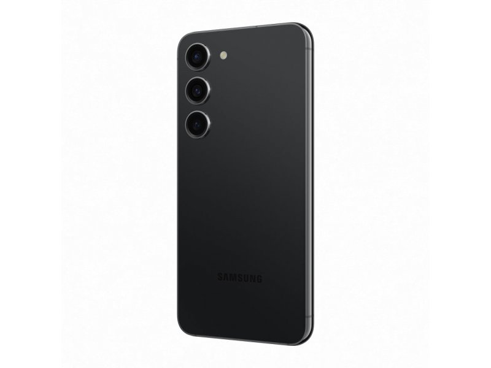
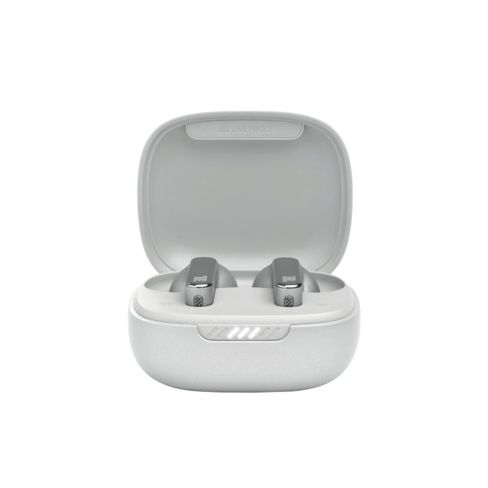

- Glavna karakteristika: Nova A18 Bionic čipset tehnologija, izuzetne performanse i efikasnost.
- Kamera: Poboljšani 48 MP senzor sa vrhunskim noćnim režimom.
- Ekran: ProMotion 120 Hz za glatko iskustvo.
- Trajanje baterije: Značajno unapređeno – traje do 2 sata duže od iPhone 15.
- Iphone 16

- Glavna karakteristika: Kompaktni dizajn sa Dynamic AMOLED 2X ekranom (120 Hz).
- Kamera: 50 MP trostruka kamera sa mogućnošću snimanja 8K video zapisa.
- Performanse: Snapdragon 8 Gen 2 čipset – brži i efikasniji od prethodnih modela.
- Baterija: 3900 mAh, puni se za manje od 1 sata sa brzim punjačem od 45 W.
- Samsung Galaxy S23

- Zvuk: Bogat, balansiran zvuk sa aktivnom eliminacijom buke (ANC).
- Baterija: Do 36 sati reprodukcije (10 sati na slušalicama, dodatno u kutiji).
- Komfor: Ergonomski dizajn, savršeno pristaju za dugotrajno nošenje.
- Vodootpornost: IPX5 – otporne na prskanje i znoj.
- JBL Live Pro 2